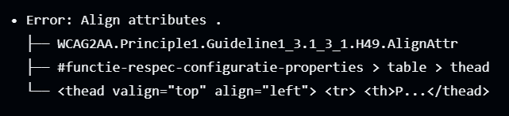

Dit document bevat een uitleg van de toepassing van Respec documentatie binnen VNG Realisatie.
In hoofdstuk 1 wordt de werking van het template uitgelegd. Hoe je het kunt gebruiken voor je eigen specificatie, wat er precies gebeurd als je er mee aan de gang gaat en waar je daarbij op moet letten.
Hoofdstuk 2 beschrijft hoe je binnen Imvertor (indien toegepast) een deel van de content van je specificatie kan genereren. Dit hoofdstuk is optioneel aangezien je Respec document niet per definitie betrekking hoeft te hebben op een Informatiemodel.
Hoofdstuk 3 beschrijft waar je op moet letten als je het GitHub Respec template kopieert (zowel als admin als als gebruiker), hoe je de Respec documentatie, evt. naast de door Imvertor gegenereerde content, nog kan voorzien van andere content en hoe je door het aanpassen van configuration properties de stijl van het document kan veranderen daarbij rekening houdend met wat wij binnen VNG Realisatie met elkaar hebben afgesproken. In de flowchart van hoofdstuk 5 wordt dit hoofdstuk met de 'Generatie tak' geïllustreerd.
Hoe de gegenereerde Respec bestanden gepubliceerd kunnen worden wordt in Hoofdstuk 4 beschreven. In de flowchart van hoofdstuk 5 wordt dit hoofdstuk met de 'Publicatie tak' geïllustreerd.
In hoofdstuk 5 is een flowchart van het gehele proces voor het vervaardigen van Respec documentatie uitgewerkt. Dit is echter tevens een voorbeeld van het gebruik van Mermaid, een manier om flowcharts te vervaardigen.
De hoofdstukken volgend op hoofdstuk 5 hebben slechts een illustratieve functie. Op basis daarvan moet je, samen met de uitleg in hoofdstuk 3, in staat zijn de getoonde functionaliteit te gebruiken.
1. ReSpec template instructies
ReSpec is een tool om html en pdf documenten te genereren op basis van markdown en html content.
Organisatie administrators dienen de knop Use this template te gebruiken om een kopie van de template repository aan te maken. Deze kan daarna door jouzelf aangepast en uitgebreid worden.
Dit template is afgeleid van het Logius Respec template maar is op enkele details aangepast:
Het organisation configuration bestand is in een aparte repository ondergebracht;
Het lokale configuratie bestand is aangepast aan de behoeftes van VNG Realisatie;
In de 'index.html' is een style element aangebracht waarmee de standaard instelling van de 'max-width' property op 'none' is gesteld;
De uitleg van de toepassing van het VNG-R Respec profiel is als inhoud aan deze repository toegevoegd.
De dynamische pagina van het template document is hier te zien.
Deze repository bevat ook de GitHub Workflows om een statische HTML-pagina en PDF-document te genereren en enkele controles uit te voeren. Deze workflows worden
automatisch gerund zodra er een aanpassing gedaan wordt aan de main branch. Een beschrijving van deze acties vind je onderaan dit hoofdstuk.
1.1 Vereiste voor gebruik
Kennis van git/GitHub
Kennis van Markdown en/of HTML
Een webserver om de documentatie te hosten
Voor de laatste gebruiken wij GitHub. Kennis van de vorm van een Javascript object is handig om de in dit template voorkomende scripts aan te kunnen passen maar zonder die kennis kom je m.b.v. deze documentatie ook al heel ver.
1.2 Gebruikersinstructie
Om het gebruik van dit template makkelijker te maken raden we het aan om een IDE te gebruiken. Die geeft een voorbeeld van hoe de markdown eruit zal zien, kan laten zien of de config files nog in de correcte vorm zijn en kan helpen in het gebruik van git. Een gratis voorbeeld van een IDE is: Visual studio code. Een combinatie van GitHub desktop en je eigen favoriete Markdown editor is echter ook mogelijk.
Aanpassingen maken aan het document gaat op 2 manieren:
De configuratie van het document aanpassing in de config files
Markdown of html files toevoegen/veranderen
De configuratie files bevatten informatie over de organisatie en over
de status van het document. Helemaal onderaan hoofdstuk 3 vind je meer informatie over de configuratie opties, daarnaast kun je ook de Logius ReSpec wiki
bezoeken. De files zijn gesplitst in 2 files die weer in 2 verschillende repositories zijn ondergebracht:
organisation-config.js en config.js.
De organisation_config (organisation-config.js) bevat configuratie properties die betrekking hebben op alle VNG-R Respec documentatie, de properties in deze file
zullen zelden veranderen zoals bijv. de naam van de organisatie.
De document_config (config.js) bevat configuratie properties die alleen relevant is voor het betreffende Respec document en hoort dan ook in elke Respec renderende repository thuis.
Beide configuratie bestanden worden gelinkt in de index.html file waardoor ze beide bij het renderen van de Respec documentatie automatisch worden samengevoegd. Daardoor zijn de organisatie specifieke configuraties over alle Respec documentatie van VNG-R gelijk en
hoeft deze niet steeds gekopieerd te worden. Op deze wijze zorgen we er voor dat alle VNG-R Respec documenten zo eenduidig mogelijk zijn en blijven.
In het volgende hoofdstuk staat beschreven hoe je de inhoud van het Respec document naar wens kunt aanpassen.
1.3 Rendering, automatische controles en publicatie
Het bestand '.github/workflows/build.yml' bevat een action script waarmee automatisch een drietal acties worden uitgevoerd nadat een bestand in de repository wordt gewijzigd, toegevoegd of verwijderd:
het renderen van het Respec document;
het checken of de gerenderde Respec html wel correct is en voldoet aan de toegankelijkheidseisen;
het publiceren van de gegenereerde statische html en pdf naar een centrale Respec publicatie repository.
We beschrijven de eerste 2 acties in het kort hieronder. Aangezien we de laatste actie nog niet werkende hebben wordt deze voorlopig nog handmatig uitgevoerd, dat beschrijven we in hoofdstuk 4.
De log van deze acties is te vinden in het tabblad Actions in de GitHub repository.
1.3.1 Rendering
Deze actie start het renderen van de Respec html. Vervolgens wordt er op basis daarvan een statische html en een pdf bestand gegenereerd. Die gebruiken we uiteindelijk om te publiceren.
De PDF-versie wordt aangemaakt omdat de property alternateFormats in de organisation_config als volgt geconfigureerd staat:
Er moet nog worden bepaald of we de document eigenaar zelf willen laten bepalen of hij/zij een pdf wil genereren. Indien we dat willen verhuisd deze property naar de document_config. De waarde van de property uri kan dan naar wens worden aangepast.
1.3.2 Checken
Na het renderen van de Respec html en pdf worden er via github actions 2 controles uitgevoerd op de html:
een WCAG-check (Web Content Accessibility Guidelines), deze guidelines gemaakt door W3C zorgen voor een verbetering van de toegankelijkheid van webapplicaties verbeterd voor zowel verschillende apparaten als voor mensen met een beperking. Ook wordt de validiteit van het HTML bestand gecheckt, bijv.:
of er geen <section> elementen met 'id' attributen voorkomen die al voorkomen in het bestand;
of er geen <a> elementen voorkomen met 'href' attributen die verwijzen naar <section> elementen die helemaal niet bestaan.
Deze check moet eerst succesvol uitgevoerd zijn voordat wordt begonnen aan de volgende check. In de 'Action' die start met het woord 'Update' (zie het Actions tabblad) kun je in de actie 'Check/WCAG' de step 'Run pa11y snapshot.html' vinden. Daar kun je zien welke fouten geconstateerd zijn.
een link-check, deze check controleert of alle links die in het document staan ook bestaan. Het gaat dan bijv. om de links die worden vermeldt in:
'Deze versie'
'Laatst gepubliceerde versie'
'Laatste werkversie'
'Vorige versie'
Deze links verwijzen naar specifieke locaties in de GitHub Pages interface van de 'publicatie' GitHub repository (zie de volgende subparagraaf voor meer uitleg). Om deze check goed te kunnen doorstaan moeten deze locaties dus al bestaan in die interface. Indien dat nog niet gedaan is moet daar de folder voor het nieuwe versienummer van de Respec documentatie al worden aangemaakt. Plaats in die folder dan ook een tijdelijk 'index.html' bestand. De inhoud van dat bestand is (nog) niet van belang.
LET OP!
Onderstaand tekst is slechts een voorstel.
De definitieve url kan indien gewenst nog andere onderdelen bevatten zoals bijv. publishDate, previousPublishDate, specStatus en previousMaturity.
Bij het genereren van de links zijn op dit moment de volgende configuration properties van belang:
nl_organisationPublishURL
De basis url van de GitHub Pages interface van de 'publicatie' GitHub repository, op dit moment: https://vng-realisatie.github.io/publicatie. Deze is gedefinieerd in de organisation_config aangezien deze altijd gelijk blijft.
pubDomain
Het publicatie domein. Aangezien we vooralsnog slechts voor Conceptuele Modellen Respec documentatie genereren heeft deze de waarde cim en staat deze gedefinieerd in de organisation_config. Zo nodig kan deze overruled worden in de document_config. Vergeet in dat geval niet om ook de structuur in de 'publicatie' GitHub repository uit te breiden. Wordt gebruikt in 'latestVersion', 'thisVersion' en 'prevVersion'.
specStatus
latestVersion
Wordt opgebouwd a.d.h.v. een aantal andere configuratie properties uit zowel de organisation_config als de document_config en enkele vaste karakters. Deze is gedefinieerd in de organisation_config aangezien deze altijd gelijk blijft.
thisVersion
Wordt opgebouwd a.d.h.v. een aantal andere configuratie properties uit zowel de organisation_config als de document_config en enkele vaste karakters. Deze is gedefinieerd in de organisation_config aangezien deze altijd gelijk blijft.
prevVersion
Wordt opgebouwd a.d.h.v. een aantal andere configuratie properties uit zowel de organisation_config als de document_config en enkele vaste karakters. Deze is gedefinieerd in de organisation_config aangezien deze altijd gelijk blijft.
shortName
De project-mnemonic, een afkorting van het project. Zo wordt het project 'Open Raadsinformatie' wordt bijv. afgekort als 'ori'. Deze is gedefinieerd in de document_config aangezien deze natuurlijk afhankelijk is van het te genereren Respec document. Wordt gebruikt in 'latestVersion', 'thisVersion' en 'prevVersion'.
publishVersion
De versie van het te publiceren Respec document. Komt overeen met de Tagged Value 'Version' in het Enterprise Architect bestand van het model en heeft een waarde dat voldoet aan het formaat x.x.x, bijv. 2.0.0. Deze is gedefinieerd in de document_config aangezien deze natuurlijk afhankelijk is van het te genereren Respec document. Wordt gebruikt in de titel van het Respec document maar ook in 'thisVersion'.
previousVersion
De voorgaande versie van het te publiceren Respec document. Komt overeen met de Tagged Value 'Version' in het Enterprise Architect bestand van het voorgaande versie van het model en heeft een waarde dat voldoet aan het formaat x.x.x, bijv. 2.0.0. Deze is gedefinieerd in de document_config aangezien deze natuurlijk afhankelijk is van het te genereren Respec document. Wordt gebruikt in 'prevVersion'.
Het consistent en nauwgezet invullen van de configuratie properties in de document_config is essentieel voor een goede werking van de links.
De bovenstaande properties hebben invloed op de wijze waarop het eerste deel van de Respec documentatie wordt gegenereerd. Hieronder sommen we de regels op. Indien wordt besloten de properties 'latestVersion', 'thisVersion' en 'prevVersion' een andere inhoud te geven dan zullen onderstaande regels herzien moeten worden.
Als de parameter 'specStatus' de waarde 'WV' heeft dan wordt de waarde van de parameter 'thisVersion' niet gebruikt voor het bepalen van 'Deze versie' maar wordt daar dezelfde waarde neergezet als bij 'Laatste werkversie'.
Als de parameter 'specStatus' de waarde 'WV' heeft dan wordt de waarde van 'Subtitel 2' niet gebaseerd op de parameter 'publishDate' maar op de datum waarop de Respec documentatie door GitHub wordt gegenereerd.
Als de parameter 'specStatus' de waarde 'WV' heeft dan wordt het versienummer niet in de titel van het document opgenomen.
Als de parameter 'previousPublishVersion' niet bestaat dan kan 'prevVersion' niet bepaald worden en wordt 'Vorige versie' niet gegenereerd.
Als de parameter 'publishVersion' niet bestaat dan kan 'thisVersion' niet bepaald worden en wordt 'Deze versie' niet gegenereerd.
2. Respec m.b.v. Imvertor
2.1 Documentatie generatie
Het is mogelijk om met Imvertor Respec documentatie te genereren van een model. Voorwaarde is wel dat het model MIM compliant is. Bij het genereren spelen de volgende Imvertor configuratieproperties (LET OP! Dus niet een van de Respec property bestanden) een rol:
Configuratieproperty
Mogelijke waarden
Uitleg
createoffice
html, doc, none
Hiermee geef je aan of je een documentatie bestand wil genereren en zo ja in welk formaat (html of MsWord). De defaultwaarde is 'none', behalve in het geval van een SIM, daar is de default 'html'. De 'doc' optie is nog niet geïmplementeerd.
createofficeanchor
name, id
Geeft aan op welke basis hyperlink anchors moeten worden gegenereerd (op basis van id's of op basis van namen). De default is 'name'. Vooralsnog maakt het niet uit welke variant je voor deze property kiest, beide varianten leiden tot hetzelfde resultaat.
createofficemode
plain, click
Definieert of er in het te genereren bestand hyperlinks moeten worden gegenereert. Bij de waarde 'click' is dat het geval. De defaultwaarde is 'plain'.
createofficevariant
respec, msword
Definieert het type te genereren document. Een Respec html document of een MsWord html variant.
Voor het genereren van Respec documentatie is het essentieel om in je lokale Imvertor property bestand de property 'createofficevariant' de waarde 'respec' te geven. Normaliter zal je dan ook de property 'createofficemode' de waarde 'click' geven.
Dit resulteert er in dat in de folder 'app/cat' 2 Respec bestanden geplaatst, 1 in html en de ander in xhtml.
2.2 Diagrammen als clickable images
Standaard zet Imvertor alle in Enterprise Architect gedefinieerde diagrammen om naar PNG images. Deze images worden echter niet als img elementen opgenomen in de gegenereerde (x)html. Indien dat gewenst is dan zul je ze zelf moeten opnemen. Het is echter wel mogelijk om deze diagrammen automatisch als clickable images in de gegenereerde (x)html op te nemen. Om dat te kunnen doen moet wel aan een aantal voorwaarden worden voldaan.
Alleen diagrammen die geplaatst zijn in de root folder (Stereotype = 'Basismodel') of in de folder waarin (de folder met) de componenten staan worden daarbij meegenomen;
De diagrammen moeten class diagrams zijn;
De naam van de diagrammen moet als suffix - overzicht of - detail hebben;
Tenslotte is de onderstaande Imvertor configuratieproperty nog van belang.
Configuratieproperty
Mogelijke waarden
Uitleg
createimagemap
yes, no
Definieert of van de Diagrammen een imagemap moet worden gegenereerd en of de gegenereerde PNG images als img element in de (x)html images worden opgenomen. De default is 'yes'.
Als deze de waarde 'yes' heeft of niet geconfigureerd is worden er in de (x)html bestanden img elementen met referenties naar de juiste images en imagemap elementen opgenomen.
LET OP! Maak de in Respec op te nemen diagrammen zoveel a;s mogelijk in portrait mode op. Dat voorkomt dat je nodeloos diep op het Respec document moet inzoomen.
Het is de bedoeling dat het publiceren van de statische html en pdf geautomatiseerd gaat verlopen. Dat hebben we helaas nog niet op orde en om die reden doen we dit voorlopig handmatig.
Het publiceren van Respec documentatie gebeurd niet vanuit de GitHub repository waarin deze wordt samengesteld en gegenereerd.
In die repository kan nl. slechts één versie van die Respec documentatie met GitHub Pages worden aangeboden terwijl we de mogelijkheid willen hebben alle voorgaande versies ook aan te bieden. Anders zouden de links in het eerst deel van de Respec documenten ook dood lopen.
Om die reden wordt bij het genereren van Respec documentatie het bestanden 'snapshot.html' en een pdf bestand gegenereerd zodat we deze bestanden kunnen kopiëren naar de 'publicatie' repository vanwaaruit we alle Respec documentatie publiceren.
3.1 Inrichten publicatie repository
LET OP!
De hieronder uitgewerkte structuur van de publicatie GitHub repository is slechts een voorstel.
Voor het publiceren van alle Respec documenten in de GitHub repository 'publicatie' is de hieronder beschreven consistente structuur vereist. Deze consistente structuur moet overeenkomen met de waarde van in het globale configuratiebestand gedefinieerde properties 'latestVersion', 'thisVersion' en 'prevVersion'. Indien wordt besloten de inhoud van die properties aan te passen dan heeft dat ook gevolgen voor de repository structuur.
folder- of bestandsnaam
Opmerking
cim
Het publicatie domein
[project-mnemonic]
De afkorting van het project. 'Open Raadsinformatie' wordt bijv. afgekort als 'ori'.
[x.x.x]
Het versienummer van het Respec document. Deze folder kan zich herhalen met steeds een ander versienummer. Komt minimaal 1x voor met als naam het huidige versienummer.
media
Folder waarin evt. illustraties staan opgenomen
index.html
Gegenereerde statische html (snapshot.html) welke overeenkomt met de versie, hernoemd.
cim-[project-mnemonic]-[x.x.x].pdf
Gegenereerd pdf bestand welke overeenkomt met de versie.
media
Folder waarin evt. illustraties staan opgenomen
index.html
Gegenereerde statische html (snapshot.html), welke overeenkomt met de huidige versie, hernoemd.
cim-[project-mnemonic]-[x.x.x].pdf
Gegenereerd pdf bestand welke overeenkomt met de huidige versie.
In dit overzicht vertegenwoordigd x.x.x het versienummer van het Respec document. De folder met die naam kan zich herhalen maar komt minimaal 1x voor, de huiidge versie. De inhoud van die folder wordt dan eveneens geplaatst in de folder [project-mnemonic]. project-mnemonic is Hieronder zie je een voorbeeld van deze structuur:
Tijdens het samenstellen van de inhoud van een nieuwe versie van een bestaand of geheel nieuw Respec document kun je de structuur in de 'publicatie' repository al aanpassen.
Betreft het de eerste versie van een Respec document creëer dan direct in de folder 'cim' een nieuwe folder die als naam de mnemonic van het project krijgt. Daarbinnen creëer je een versiefolder met als naam het versienummer waaronder je de eerste versie publiceert.
Bestaat de projectfolder al wel dan creëer in die folder een nieuwe versiefolder met als naam het versienummer waaronder je de nieuwe versie publiceert. In beide folders creëer je voorlopig een leeg 'index.html' bestand.
3.2 Publiceren van documenten
Na generatie kunnen de bestanden 'snapshot.html' en 'snapshot.pdf' vanuit de GitHub repository waarin ze gegenereerd zijn worden gekopieerd projectfolder en naar de naar de zojuist aangemaakte versiefolder in de 'publicatie' repository.
Het bestand 'index.html' verwijder je vervolgens in beide folders waarna je 'snapshot.html', eveneens in beide folder, hernoemt naar 'index.html'. Indien je in je Resoec documentatie images hebt geplaatst dan heb je die bestanden in de 'media' folder opgeslagen, kopieer in dat geval de 'media' folder eveneens naar beide folders.
Pas vervolgens in de root van de publicatie repository de 'index.md' aan zodat je toegang hebt tot alle Respec documentatie en de http links kunt kopiëren voor gebruik in andere GitHub Pages documentatie.
4. Foutoplossing
Nadat een bestand in een op de VNG-R-Respec-Temp[late repository gebaseerde repository wordt gewijzigd, toegevoegd of verwijderd treedt het 'Build' action script in werking. Er kunnen zich daarbij diverse problemen voordoen.
Detectie van een probleem start altijd bij het onderzoeken van de Action workflows. Deze kun je benaderen door in GitHub het tabblad 'Actions' aan te klikken waarn. In het daarop volgende scherm tref je vervolgens een tweetal typen workflows aan.
Update workflows
pages build en deployment workflows
Het eerste type draagt over het algemeen de naam van een gewijzigd bestand en dit zal over het algemeen het type workflow zijn waarin zich de problemen voordoen. Om beter te kunnen bepalen wat er precies fout ging moet je op de workflow klikken.
In het daarop volgende menu kun je de uitegevoerde modules zien en waar het fout is gegaan, ook daar kun je weer op klikken. Tenslotte kun je daar weer de foutgelopen stap zien
Ter ondersteuning bij het oplossen van die problemen beschrijven we er hier een aantal en geven we aan wat daar de mogelijke oorzaak van is en hoe je dat kunt oplossen.
Foutgelopen module
Foutieve stap
Probleem
Mogelijke oorzaak
Oplossing
Check/Links
Check links
Er worden één of meer links getoond met http 404 codes.
De betreffende link komt voor in het aangegeven bestand. Veelal het gegenereerde snapshot.html bestand.
Het kan een in het document voorkomende url betreffen die niet echt correct hoeft te zijn. In dat geval kun je hem negeren.
Betreft het de link die vermeldt staat bij 'Deze versie', 'Laatst gepubliceerde versie', 'Laatste werkversie' of 'Vorige versie' dan moet je checken of de url wel overeenkomt met een in de publicatie repository geplaatste versie of met de url van de GitHub Pages van de Respec repository zelf. Corrigeer evt. de publicatie repository.
Check/WCAG
Run pa11y snapshot.html
Er zijn een of meerdere fouten gedetecteerd die tegen de WCAG principes in gaan
Mogelijk heb je een fout gemaakt in de html of je hebt in html een constructie gebruikt die niet gewenst is. De foutmelding ziet er vaak als volgt uit Figuur 2
Onderstaande flowchart beschrijft het proces zoals we dat binnen VNG Realisatie hanteren om tot Respec documentatie te komen. Daarnaast is het echter ook een voorbeeld van het gebruik van de Mermaid syntax voor het vervaardigen van zo'n flowchart.
Figuur 3Het VNG-R Respec proces (Mermaid voorbeeld)
In de code van het bovenstaand voorbeeld is de mermaid code binnen een figure element geplaatst'. Let daarbij op dat er voorafgaand aan de eerste en na de laatste ``` code een lege regel wordt geplaatst. Het figure element mag dus niet direct aansluiten op de ``` code.
Vermijd markdown frontmatter secties zoals --- title: Animal example --- De ervaring is dat deze een goede verwerking van de Mermaid code verhinderd.
Dit hoofdstuk is toegevoegd met class="informative" in config.js.
7. Meer inhoud
7.1 Definities
Definitie: Een definitie is een beschrijving van een woord. Een ander woord voor definitie is betekenis of beschrijving.
De notatiewijze voor het definiëeren van een definitie is als volgt:
<dfn>Definitie</dfn>
Deze definities worden opgenomen in de bijlage 'Index'.
7.2 Afbeeldingen
Afbeeldingen krijgen een nummer en vermelding in de figurenlijst 9. Lijst met figuren.
Referentie uit globale [SemVer] of lokale [MIM] localBiblio lijst. Deze lijst staat in de organisation-config.js of config.js, zie hieronder een voorbeeld.
Alleen referenties die ook echt in de tekst voorkomen worden in de bijlage 'Referenties' getoond. De notatie voor het opnemen van een referentie is [ [xxxx] ].
We gebruiken de notatie <a>xxxxx<</a> om een referentie naar een in het document aangebrachte definitie te creëren.
Het resultaat ziet er dan bijv. zo definitie uit.
7.4 Optioneel
De onderstaande secties (Conformiteit e.d.) zijn optioneel, zie index.html:
<body><sectionid="abstract"data-include-format="markdown"data-include="abstract.md"></section><sectionid="sotd"></section><!-- Wordt automatisch gevuld --><sectiondata-include-format="markdown"class="informative"data-include="ch01.md"></section><sectiondata-include-format="markdown"data-include="ch02.md"></section><!-- Hieronder optionele secties. Worden automatisch gevuld --><sectionid='conformance'></section><sectionid='tof'></section><sectionid="index"></section></body>
8. Conformiteit
Naast onderdelen die als niet normatief gemarkeerd zijn, zijn ook alle diagrammen, voorbeelden, en noten in dit document niet normatief. Verder is alles in dit document normatief.